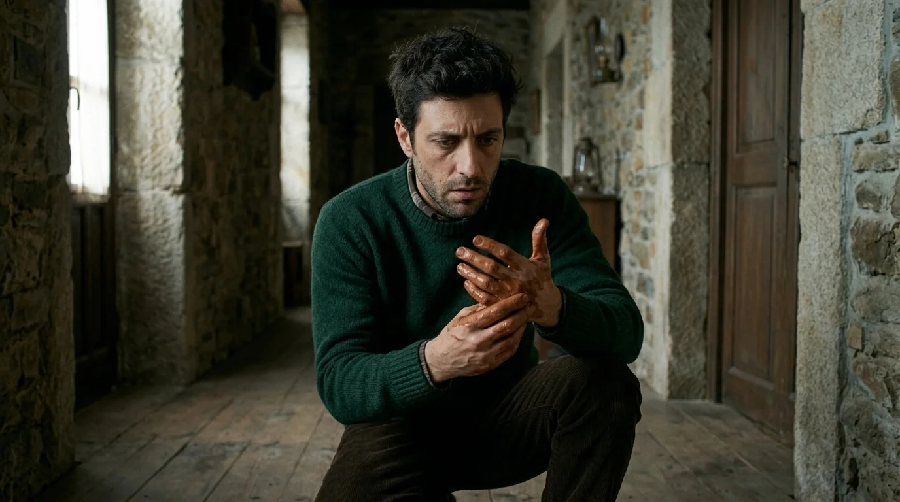
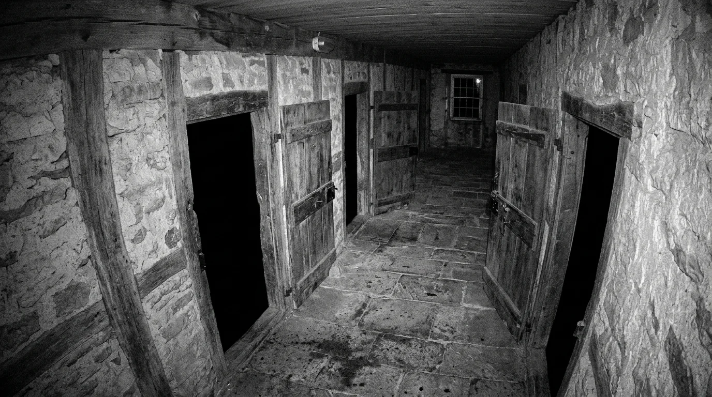
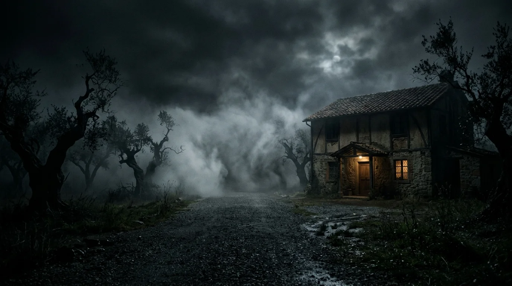
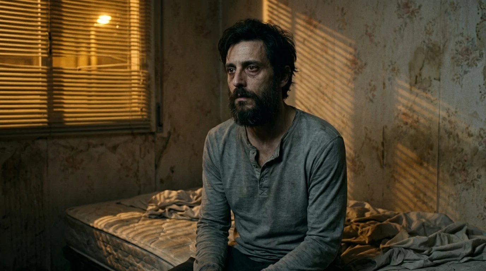
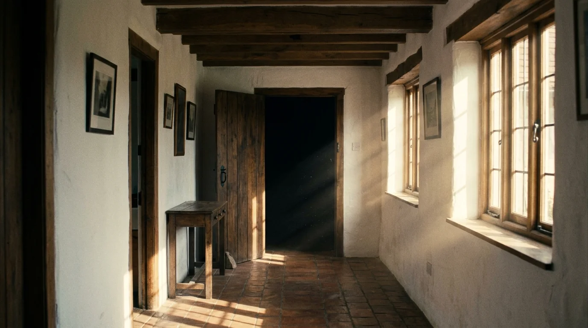

El barro del pasillo apareció un martes, adherido a las juntas de las baldosas rojizas en una línea de pisadas descalzas que iba desde la cancela interior hasta el pie de la cama. Daniel fue el primero en apoyar los pies sobre la tarima fría. Se inclinó, frotó el polvo entre las yemas y olió la tierra húmeda. Era arcilla pura, como la del arroyo que cruzaba el olivar, pero las tres puertas del porche conservaban los cerrojos de hierro pasados por dentro.
—¿Has salido anoche al patio? —preguntó Daniel en el quicio de la cocina.
Clara se ajustó la chaqueta de punto y negó con la cabeza sin apartar la vista de los planos. Llevaban tres semanas raspando cal y durmiendo bajo vigas de pino que crujían con el viento de la sierra.
—Ni me levanté a por agua —respondió ella—. Y descalza sobre esta tarima vieja habría chirriado la madera. Te habrías despertado al primer paso.
Daniel frotó las marcas con una bayeta. Cada huella era ancha, corta, con los dedos abiertos de un modo tosco, como si quien las dejó no hubiera usado calzado jamás. Al llegar al dormitorio, la última pisada se detenía en seco a medio metro de donde reposaba la almohada de Clara.
La vivienda no tenía segunda planta. Era una nave baja de mampostería, con tejado a cuatro vertientes y un falso techo ciego accesible solo por un registro del baño. Sin embargo, en la madrugada del viernes, un estruendo los despertó a las tres y media.
Eran pasos. Pasos lentos y macizos que caminaban sobre sus cabezas, haciendo vibrar los cercos de las ventanas. El peso arrastraba un taconeo seco, como de suela dura sobre entarimado, cruzando desde el salón hacia el dormitorio.
Daniel saltó de la cama con una linterna y encendió las luces del pasillo. Arriba, el sonido se detuvo justo sobre él.
—Hay alguien en el tejado, Clara —susurró con la garganta seca—. Quédate aquí.
—Eso no son tejas, Dani —dijo ella desde la puerta, con las manos en el pecho—. Las tejas sonarían partidas. Eso son tablas. Hay tablas sobre nosotros.
Daniel subió a una banqueta, empujó el registro e iluminó el hueco superior. La luz cortó una densa niebla de polvo y telarañas. No había suelo practicable, ni un solo tablón tendido, ni desván habitable; únicamente lana de vidrio y la pendiente oscura de las tejas árabes.
A la mañana siguiente, Daniel bajó al pueblo, compró dos cerrojos de latón y una cámara de seguridad con visión nocturna y tarjeta de memoria. La atornilló a una viga alta del pasillo, enfocando hacia la entrada del dormitorio y el corredor entero.

La primera noche con la cámara encendida transcurrió en calma hasta las tres y dieciséis. Daniel revisó el archivo en el portátil a primera hora de la mañana.
Avanzó segundo a segundo. A las tres y dieciséis y cincuenta segundos, el sensor captó una vibración tenue. Luego, el minutero marcó las 03:17:00.
En ese instante preciso, los tres pestillos de las habitaciones se abrieron a la vez con un chasquido seco, como si tres manos invisibles hubieran bajado las manillas al unísono.
Daniel contuvo el aliento. Al fondo del pasillo, junto a la despensa, surgió una sombra que no procedía de ningún rincón visible. Era un bulto vertical, anguloso, con los hombros caídos y un rostro sin rasgos que miraba de frente al objetivo de la cámara. La figura permaneció clavada allí durante sesenta segundos exactos, sin respirar ni moverse.
A las 03:18:00, la imagen dio un salto digital, la pantalla parpadeó en verde y el pasillo volvió a quedar desierto, con las puertas abiertas bajo el zumbido de la corriente.
—Clara —llamó Daniel con los dedos rígidos—. Mira esto.
Ella se acercó despacio. Al reproducir la escena, no gritó. Tocó la pantalla con la yema del dedo sobre la silueta.
—No está sobre el suelo —susurró con un hilo de voz—. Fíjate en el marco de atrás. Está saliendo desde abajo. Hay algo debajo de la casa, Dani.
En el bar del pueblo, el dueño limpiaba la barra con un trapo y evitaba mirar a Daniel cada vez que mencionaba la finca.
—Esa casa ha tenido seis dueños en cuarenta años —dijo finalmente el tabernero en voz baja—. Nadie aguanta dos inviernos. Dicen que por la humedad, pero los Alcaraz, que la levantaron en los setenta, no se fueron por frío. Dejaron los platos puestos en la mesa y las llaves colgadas. La guardia civil buscó a la mujer y al zagal por los pozos. Dijeron que cruzaron a Francia, pero nadie vio jamás una furgoneta de mudanza.
Daniel regresó con una palanca de acero en el maletero. Encontró a Clara arrodillada en el pasillo, retirando cera vieja de las juntas de roble donde terminaban las huellas de barro rojo.
—Aquí cede —dijo ella sin mirarlo—. Escucha.
Clara golpeó el mango de la espátula. El sonido fue un eco cavernoso que reverberó bajo la casa como un aljibe vacío.

Daniel metió la uña de la palanca y tiró. La madera crujió con un desgarro de clavos oxidados. Saltaron dos tablas, levantando polvo a cal húmeda y moho subterráneo.
Bajo la tarima descubrieron un marco de hierro y una pesada trampilla de castaño con un pasador de forja encajado a medias.
Daniel encendió la linterna y abrió el batiente izquierdo. Una bocanada de aire helado, con olor a piedra mojada y agua estancada, les subió a la cara.
—Quédate arriba —le advirtió a Clara—. Solo voy a mirar.
La linterna iluminó una escalera de mampostería estrecha que descendía cuatro metros hasta una cámara abovedada excavada en la roca viva. Las paredes eran de pizarra negra, húmedas por hilillos de agua.
Daniel bajó tres peldaños. Al barrer el muro frontal con la luz, descubrió decenas de incisiones talladas en la roca.
Eran marcas de altura: líneas hendidas con cincel junto a nombres y fechas en pintura blanca cuarteada. «Mateo Alcaraz, 1974». «Teresa Alcaraz, 1978». Y más atrás: «1912», «1926», «1939». Cada hilera marcaba estaturas que crecían año tras año hasta detenerse en una marca común a todas las columnas.
Al pie de la última fila, una incisión brillaba con tiza fresca sobre la pizarra húmeda: «Clara Mendoza — 20 de octubre».
La fecha correspondía al día siguiente.
—Daniel —la voz de Clara sonó desde arriba, apagada—. Sal de ahí. Tenemos que coger el coche e irnos.
Daniel subió de tres zancadas, cerró la trampilla y colocó encima un baúl de herramientas de hierro.
—Coge la documentación y los abrigos —ordenó con el pulso acelerado—. Dormimos en el pueblo.
Salieron al camino de grava bajo una llovizna fina. Daniel giró la llave del todoterreno; el motor tosió una vez y la aguja cayó a cero. La batería estaba muerta.
Sacó el teléfono: «Sin servicio» y la carga agotada, a pesar de haberlo desenchufado media hora antes. El de Clara estaba igual de apagado y frío. La noche cayó sobre la sierra con una rapidez anormal, borrando los caminos.

Cerraron el dormitorio por dentro, atrancaron la puerta con una cuña de madera y se sentaron juntos en el colchón con los abrigos puestos. Daniel sostenía la linterna y una llave inglesa pesada. El único sonido era el tic-tac seco del despertador sobre la mesilla.
A las tres de la madrugada, los crujidos cesaron. El viento amainó y una quietud densa se adueñó de las esquinas.
Daniel sintió un sopor repentino que le quemaba la nuca. Luchó por mantener los ojos abiertos, pero un pestañeo involuntario lo venció unos segundos.
Un chasquido seco lo devolvió a la vigilia.
Miró el despertador: las 03:17.
El lado derecho de la cama estaba vacío. Las sábanas conservaban la forma de Clara, pero el hueco estaba helado. La cuña yacía partida en dos sobre la alfombra y la puerta del pasillo colgaba entreabierta.
Daniel salió al corredor con la linterna en alto.
El baúl de herramientas había sido apartado a un lado sin arañar la madera. La trampilla de castaño estaba abierta de par en par, exhalando un vaho blanco con olor a tierra removida.
—¿Clara? —gritó con la garganta rota—. ¡Clara!
Desde el fondo de la escalera, la voz de su mujer brotó suave y serena:
—Estoy aquí abajo, Dani. Baja. Tienes que ver esto. No hay nada que temer.
Daniel bajó los primeros peldaños apuntando el foco hacia el sótano. En el descansillo inferior, de espaldas a la luz, Clara permanecía inmóvil frente al muro de pizarra con su chaqueta mostaza. Sus brazos colgaban pegados a los costados con rigidez artificial. No se giró al oír sus pasos.
—Clara, por favor, dame la mano y vámonos —suplicó él, estirando el brazo.

En ese instante, mientras la figura del fondo seguía inmóvil de espaldas, unos labios helados rozaron la oreja de Daniel desde la oscuridad que quedaba a su espalda, junto a la escalera.
—Ahora solo falta que bajes tú del todo —le susurró la voz exacta de Clara detrás de la nuca.
Daniel soltó un grito, arrojó la linterna y trepó a gatas por la pendiente, raspándose las rodillas contra los cantos de piedra. Cruzó el pasillo a ciegas, embistió la cancela exterior con el hombro y cayó sobre el barro del porche. Echó a correr por el camino de los olivos sin mirar atrás, guiándose por el resplandor lejano de las farolas de la carretera comarcal.
La patrulla de la Guardia Civil tardó cuatro horas en llegar a la finca, demorada por la niebla y por el estado de shock de Daniel en el cuartelillo del pueblo.
Cuando los agentes entraron en el caserón, la vivienda descansaba bajo una luz plácida de mañana otoñal. En el pasillo no había rastro de barro. El suelo de tarima estaba liso, pulido y rematado con clavos antiguos que parecían no haberse movido en medio siglo.
Los guardias golpearon las tablas con una maza buscando huecos. No había trampillas ni hendiduras. Cuando obligaron a Daniel a señalar el punto exacto, este cayó de rodillas y arañó la madera hasta sangrar; debajo solo asomaba el forjado macizo de mortero. El bolso de Clara, su abrigo y sus documentos personales seguían ordenados sobre la mesa, junto a dos tazas limpias.
Interrogaron a Daniel durante dos días. Rastrearon pozos y barrancos con perros, pero no hallaron una sola pista. Sin indicios de violencia física y con las declaraciones delirantes de un hombre destrozado, la jueza decretó su libertad provisional con obligación de firmar semanalmente.
Daniel se instaló en una pensión de la capital. Pasó un mes recluido, sin encender la luz, vigilando el reloj de pulsera cada madrugada al acercarse las tres.
A mediados de noviembre, empujado por la necesidad desesperada de hallar una prueba que lo alejara de la locura, alquiló una furgoneta y regresó a la casa a pleno día para recoger las escrituras y sus pertenencias.
El caserón lo recibió en un silencio sepulcral. Entró en el salón, guardó los papeles y se detuvo en mitad del pasillo.
Allí, encajada en el saliente de la viga donde la había atornillado semanas atrás, seguía la pequeña cámara de seguridad. El led rojo parpadeaba con suavidad.
Daniel bajó el aparato, extrajo la tarjeta de memoria y la conectó al portátil sobre la encimera. Contenía una única grabación fechada la noche de su huida.
Pulsó la barra espaciadora.

La pantalla mostró un ángulo imposible. La cámara no enfocaba desde el pasillo, sino desde el techo del dormitorio, grabando en picado vertical sobre la cama como si estuviera pegada al yeso del cielo raso.
En el vídeo, Daniel y Clara dormían bajo el edredón. Los números del minutero corrían: 03:16:50... 03:16:55...
A las 03:17:00 en punto, Clara abrió los ojos de golpe. Se sentó sin hacer ruido, apartó las mantas y se puso en pie. Caminó hacia la pared ciega que daba al patio exterior, extendió las manos hacia la piedra y la atravesó como una cortina de humo, desvaneciéndose en el muro.
Daniel, frente a la pantalla, sintió que el pecho se le oprimía. Iba a cerrar el portátil cuando vio que su propio cuerpo sobre la cama empezaba a moverse en la grabación.
El Daniel del vídeo abrió los ojos despacio. Giró el cuello en un ángulo rígido y clavó la mirada directamente en el objetivo de la cámara.
Sus labios grabados se movieron con lentitud. La voz que brotó de los altavoces del ordenador no era la suya; era el tono nítido y suave de Clara:
—Ahora solo falta que bajes tú.
La pantalla parpadeó en negro y el reproductor volvió al menú.
Seis meses después, un coche familiar blanco se detuvo en el camino de entrada, levantando una nube de polvo seco. Un matrimonio joven bajó del vehículo contemplando los olivares con admiración.
—Es una finca magnífica —decía el agente inmobiliario mientras abría la cancela con una llave de hierro—. Los antiguos propietarios tuvieron que marcharse fuera del país de forma repentina, pero la construcción es de piedra sólida. Mucha paz día y noche.
La pareja recorrió el pasillo central, mirando las vigas de madera.
—Tiene mucha luz —comentó ella—. Aunque se nota fresca la casa.
En la pared del fondo, un reloj de péndulo de caja larga descansaba arrimado al rodapié, cubierto por una sábana para protegerlo de la cal. Debajo de la tela, el mecanismo soltó un chasquido metálico y las manecillas marcaron las tres y diecisiete.
En ese instante, la puerta del dormitorio del fondo se abrió sola con un crujido suave, revelando una rendija de oscuridad absoluta bajo el sol radiante de la una de la tarde.